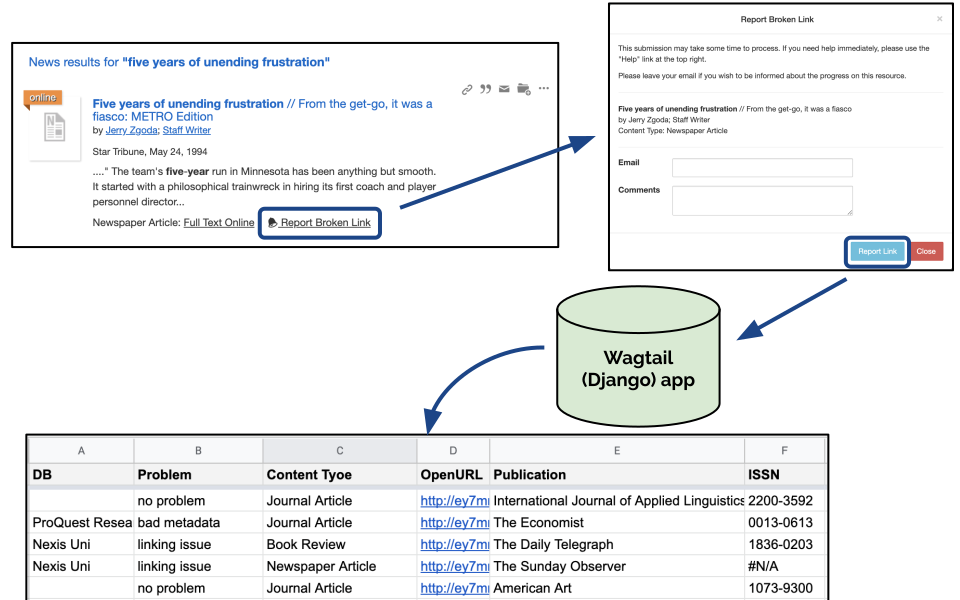

EVERYTHING IS BROKEN
but by how much exactly?
code4lib 2020 pittsburgh | eric phetteplace | @phette23 | california college of the artsBroken Full Text Links

report a broken link

Shout out to Robert Hoyt & Fairfield University, who provided code and the general architecture for this. Code: Summon JS | Wagtail "broken links" app
why do links break?
- metadata mismatch between DL index and an uncooperative content provider
- metadata mismatch between DL index record from one source and provider content from another
- granularity mismatch: DL index and provider disagree about whether a section should be one or many articles (often occurs with book reviews, letters to the editor, etc.)
- limitations of openURL linking: destination database cannot use all openURL metadata fields and the ones available don't uniquely identify the article
- links are title-level only making it hard for users to find full text
- content doesn't exist in the source even though it should
- content doesn't exist in the source due to embargo with the naïve knowledge base doesn't know about
- we configured EZproxy wrong or didn't add a database stanza yet
- we configured our rights statements wrong & said he have/don't have a database when that's not the case
- we deleted a catalog record but our local holdings haven't updated in the DL index yet
Problem origins: us, the discovery layer, content providers, metadata providers.
is this real life...or just reporting bias?
experiment: Summon broken links
a series of Node scripts to
- randomly select queries from real user data
- obtain search results for those queries
- test result links for resolution
- compile summary statistics
results
- only 78.5% of links worked 😞
- eventually found full text for 54.5% of broken links
- worst offenders: Magazine Articles (43%), Newspaper Articles (70%), Nexis Uni (63%)
- traditional academic sources faired better
- striking contrast: direct linking (98%) versus openURL (63%)
little has changed
The number of problems discovered in full-text items that are linked via an OpenURL is discouraging; however, the ability of the Summon Discovery Service to provide accurate access to full text is an overall positive because of its direct link functionality. More than 95% of direct-linked articles in our research led to the correct resource. One-click (OpenURL) resolution was noticeably poorer, with about 60% of requests leading directly to the correct full-text item. More alarming, we found that, of full-text requests linked through an OpenURL, a large portion—20%—fail.
what we're doing
- work with vendor's support, try to be systematic
- change of linking strategy: pass only numeric metadata (volume, issue, ISSN) & omit title
- cut toxic links out of your life 🤢
- identify & avoid problematic
- content types (Book Reviews)
- platforms (EBSCO, Nexis Uni)
why it's hopeless
- my life and patience are finite
- incentive is to make larger and larger indexes not functional, tested ones
- vendors don't want to vet each others incoming links & blame each other rather than work to mutual solutions
- OpenURL assumes Universal Metadata that does not exist
- linking "can't do this / can't do that" even with perfect metadata
References & Links
- These slides: phette.net/broken
- Me: @phette23 everywhere (gmail, Twitter, GitHub)
- Fairfield University Broken Links app, Robert Hoyt
- Summon Broken Links on GitHub
- Stuart, K., Varnum, K., & Ahronheim, J. (2015). Measuring Journal Linking Success from a Discovery Service. Information Technology and Libraries (Online); Chicago, 34(1), 52–76. https://ejournals.bc.edu/index.php/ital/article/view/5607